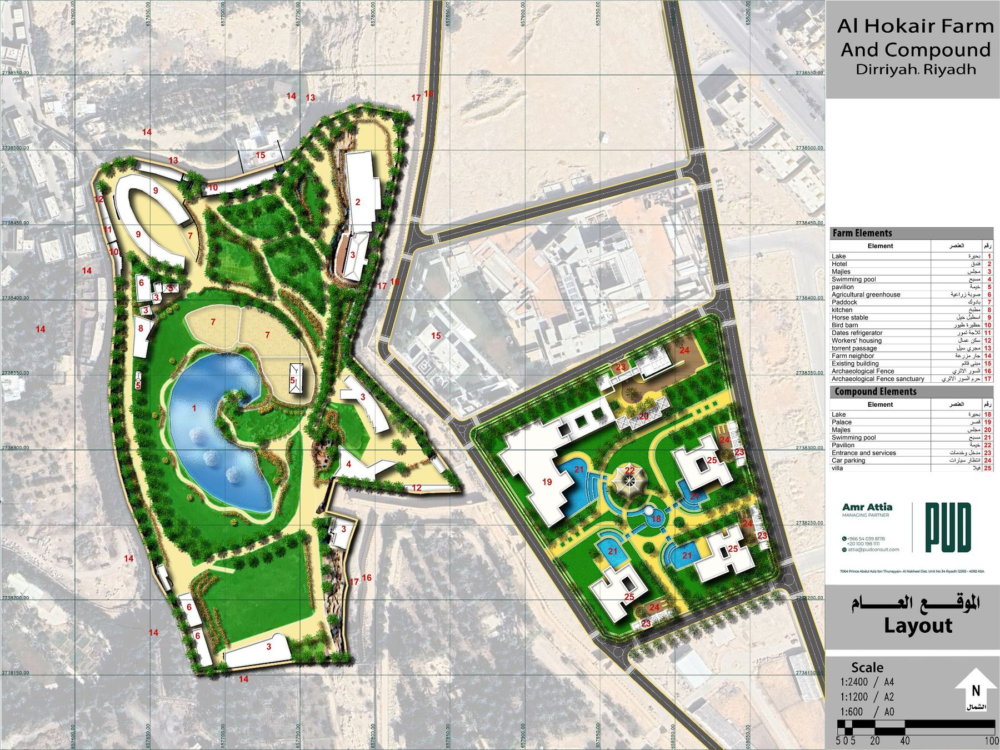

Fawaz Alhokair Diriyah Farm and Compound
Master plan · Diriyah, Riyadh, Saudi Arabia
Master plan for a private estate in Diriyah, Riyadh, in two parts: a farm with lakes, stables, orchards, greenhouses and agricultural zones, and a private compound of villas, pool areas, garden pavilions and guest facilities. Ongoing.
Partners
PUD
Client
Fawaz Alhokair